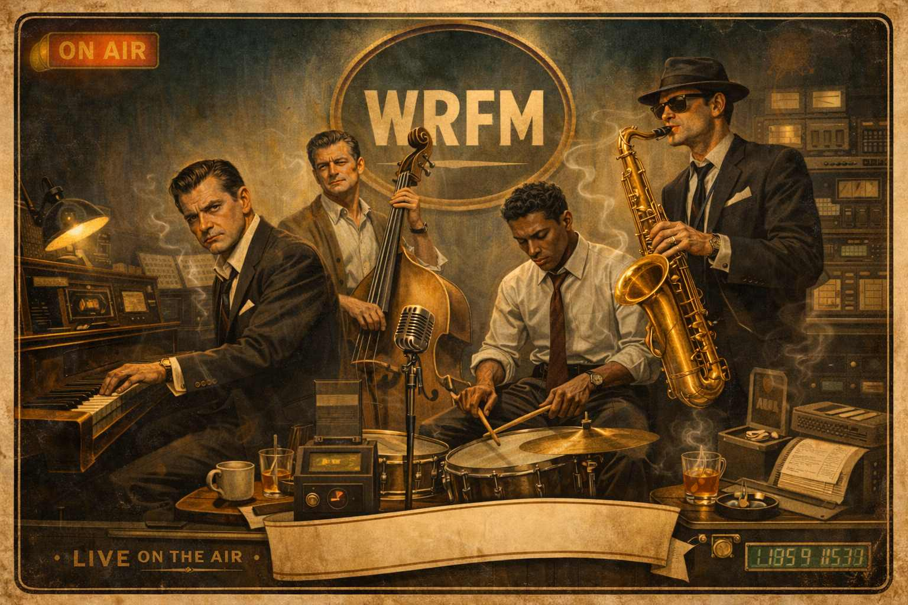

WRFM Radio Station™
Progress report
Listen live
Images, audio, music, voice, and other content.
- Availability
- Not for sale
- Full release ETA
- Free to play · Q1–Q2 2027
- Time invested
- Approx. 60 hours
Includes Flow Programming, art and audio creation. Estimates may change; content remaining is not overall game completion.
Instrumental Smooth Jazz • Developer Satire • Interactive Radio
One station. One shared timeline. Genuinely good, vocal-free smooth jazz you can leave on all day — with Vera Lang, strange callers, and commercials written for people who ship code.
Overview
Keep the station with you
Host Vera Lang has the microphone. Open the station in its own tab to keep listening while you explore the studio website.
Open the radio in a new tab ↗WRFM is a playable online radio station built around relaxing instrumental smooth jazz. The music has no vocals, sounds legitimately good, and is smooth enough to leave playing all day. Between tracks, station host Vera Lang, strange callers, and satirical commercials build out the world; most of the ads are aimed squarely at developers, with jokes and lingo anyone who ships code will recognize.
Meet the Station

The host, a sponsor that shouldn’t exist, a late-night caller, an office regular, and the phone nobody tells you about. It’s the same tape that plays on air.
Each clip has a transcript underneath.
Your browser can’t play these clips. They work in current Chrome, Edge, Firefox and Safari (18.4 or newer).
-
The host
Vera Lang signs on
“If you’re hearing this, it means the office is quiet and you’re still here. That’s not a mistake.”
Vera has the microphone, and she notices who is still at their desk.
Transcript
VERA If you’re hearing this, it means the office is quiet and you’re still here. That’s not a mistake. This is WRFM. I’m Vera Lang. Let’s take the night one piece at a time.
0:17 -
The sponsors
Rubber Duck Rental
“Rubber Duck Rental! Rubber Duck Rental! It listens. You debug. That’s the deal.”
One of 22 sponsors that absolutely should not exist, and the only one with a fully sung jingle. Duck included.
Transcript
JINGLE When your function won’t run / And your logic’s come undone — / Don’t pick up the phone (quack!) / Don’t send up a flare! / Just rent-a-duck today, / We’ll ship it right away, / Yellow, small, and bright (quack!) / It really doesn’t care! / Explain your bug to feathers, / Talk your tests out loud, / The duck will never judge you — / (though the duck is not impressed.) / Rubber Duck Rental! (squeak!) / Rubber Duck Rental! / It listens. You debug. That’s the deal.
0:30 -
The callers
After Hours Intake
“I created a repository interface, a service class, a DTO, a mapper, a configuration bean, three annotations, and something called a factory.” “For one value.”
Late at night the lines open, and Vera takes confessions. On desktop, the transcript slides onto your screen while the call is on air.
Transcript
VERA You’re on the line. What’s troubling you tonight?
CALLER I needed to read one value from a database.
VERA And how did that proceed.
CALLER I created a repository interface, a service class, a DTO, a mapper, a configuration bean, three annotations, and something called a factory.
VERA For one value.
CALLER …for one value.
VERA Enterprise environments sometimes require ceremonial preparation before touching the data.
CALLER The method is six lines. The structure is four hundred.
VERA The station confirms this is considered normal atmospheric pressure in large Java systems.
CALLER That’s… comforting?
VERA Comfort is not guaranteed. Stability, however, usually is.
1:00 -
The regulars
Mitch from IT
“I am the radio, Mitch.” “Have you tried turning the radio off and on again.”
The office phones the station. Mitch works in IT, and he is trying his best.
Transcript
[Phone rings. A mechanical keyboard clatters in the background.]
MITCH IT, Mitch speaking, have you tried turning it off and on again.
VERA Mitch. You called me.
MITCH Right, well, the issue could be on your end.
VERA I am the radio, Mitch.
MITCH Have you tried turning the radio off and on again.
VERA (long pause) Mitch. I will.
MITCH Thank you for choosing IT.
0:31 -
The secret
The phone nobody tells you about
“There’s a phone in this station, sweetheart. I’m not going to tell you where.”
Vera drops hints on air. Find the WRFM Line, dial 9‑7‑1 while the lines are open, and she picks up.
Transcript
VERA, ON AIR There’s a phone in this station, sweetheart. I’m not going to tell you where. I don’t have to. You’ll find it. Most people do. Eventually.
[Later, on the WRFM Line: dial 9-7-1.]
VERA You called. Not many do. What can I do for you?
[You pick “Tell me something weird.”]
VERA Studio B has been locked since 1974. We don’t talk about Studio B.
0:25
Vera signs off
“You’re still here. Either you care… or you’re avoiding something. WRFM supports both.”
Listen to WRFM right here
This is a real shared broadcast, not a personal playlist. Join at any time and you’ll drop into the exact song and moment every other listener is hearing.
Want the full-screen experience? Open WRFM in a new tab →
More From the Tape
A few more clips, grouped the way the station uses them. If the live player above is on, pause it first. These play on top of it.
Sponsors
When an ad is on air, the sponsor’s dossier opens on screen, fine print and all.
Debug Investigator: Martin Hale 0:51
“I handle the ones that only appear when your boss is watching.”
Transcript
VERA If your screen currently contains more warnings than actual content, this next sponsor may be useful.
SPOT Debug Investigator, Martin Hale. Some bugs happen all the time. I handle the ones that only appear when your boss is watching. I’m Martin Hale, Debug Investigator. If your software runs perfectly for weeks… then crashes during the demo… If the error disappears the moment you open the console… If adding one console.log mysteriously fixes everything… My office tracks the behavior and questions the code. Debug Investigation Services. Because the bug knows you’re nervous.
Friday Deployment Defense Fund 0:39
“Pushed on Friday? Feeling dread? Weekend panic straight ahead?”
Transcript
SPOT Pushed on Friday? Feeling dread? Weekend panic straight ahead? Lawyers ready, standing by — Friday Defense will testify! (spoken) Friday Deployment Defense Fund. Representation recommended prior to 4:59 p.m.
VERA That message was provided for your informational stability.
Callers
After Hours Intake takes confessions. Some callers are regulars.
After Hours Intake: one checkbox 1:00
“I just needed one checkbox.” “Many historic incidents began with that sentence.”
Transcript
VERA After Hours Intake. Go ahead.
CALLER My React component… it has state. And context. And reducers. And another state to track the reducer state. And now nothing updates unless I refresh twice.
VERA You attempted to manage reality using multiple overlapping sources of truth.
CALLER I just needed one checkbox.
VERA Many historic incidents began with that sentence.
CALLER I don’t even know which hook is firing anymore.
VERA The station gently suggests that when state diagrams begin resembling subway maps, simplification is medically advisable.
CALLER …yeah.
VERA You may rest. Tomorrow you will delete at least one layer, and the application will mysteriously improve.
The Intern 0:22
“Buttercup, none of us know how to print. We have been pretending for thirty years.”
Transcript
[Phone rings.]
INTERN (small voice) Vera?
VERA Sweetheart. Where are you.
INTERN I’m in the supply closet.
VERA Why.
INTERN I — I don’t know how to print.
VERA (long pause) Buttercup, none of us know how to print. We have been pretending for thirty years.
INTERN (sniff) …really?
VERA Welcome to the office, sweetheart.
Vera’s Desk
HR memos, the nightly Crime Blotter, and whatever else crosses the night desk.
HR memo 0:14
“Her name is Cheryl. Cheryl is doing her best. Cheryl is doing better than several of you.”
Transcript
VERA Reminder: the office plant has a name. Her name is Cheryl. Cheryl is doing her best. Cheryl is doing better than several of you.
Crime Blotter 0:33
“10:01 PM, unauthorized fish reheat. Kevin. Always Kevin.”
Transcript
[A typewriter clicks.]
VERA Tonight’s Crime Blotter, second floor edition. 8:42 PM, theft of one yogurt, brand ‘Noosa,’ victim Carla, suspect at large. 9:13 PM, suspicious lanyard activity near the printer: perpetrator was holding two badges, neither of them his. 10:01 PM, unauthorized fish reheat. Kevin. Always Kevin.
The Phone
Dial 971 and Vera answers. Nineteen other numbers connect to someone else entirely.
Dial 666 0:05
“You’ve reached the Department of Atmospheric Anomalies. Please hold… forever.”
Transcript
THE LINE You’ve reached the Department of Atmospheric Anomalies. Please hold… forever.
Vera on the line 0:07
“Real? Darling, I’m on the radio. Reality is already doing too much.”
Transcript
[You ask, “Are you real?”]
VERA Real? Darling, I’m on the radio. Reality is already doing too much.
Features
One Shared Broadcast
Every listener hears the same song at the same second, wherever they tune in from. Arrive at any time and you drop straight into the moment everyone else is hearing.
Two Live Channels
97.1 LIVE runs to the station clock. AFTER DARK is the late-night feed, on demand. Both are synced, and After Dark is a genuinely different programme, not a shuffle.
Skip, or Go Live
Skipping drops you into your own personal shuffle. GO LIVE puts you back on the broadcast with everybody else.
Hosted by Vera Lang
A fully voiced, sharp-tongued host with plenty to say between songs — 105 chatter clips, caller segments and late-night lore, rebalanced so daytime listeners hear them too.
Sponsors That Shouldn’t Exist
22 satirical commercials aimed mostly at developers, packed with familiar lingo and in-jokes — from Deployment Insurance to a StackOverflow Witness Protection Program. Every sponsor has a full dossier, fine print included, that opens on the desktop station while its ad is on air.
Callers and Confessions
Late-night confessions on After Hours Intake, Mitch from IT, an intern hiding in the supply closet, HR memos and the nightly Crime Blotter. When an intake call is on air, its transcript slides onto the desktop screen.
Pick Up the Phone
Dial 971 on the WRFM Line during a call-in window (5–6 AM and 9–10 PM your time, or any time on After Dark) and Vera answers, with 43 recorded replies. Nineteen other numbers are hidden on the same dial.
Smooth Jazz That Holds Up
61 genuinely good instrumental tracks from 25 fictional bands. There are no vocals — just relaxing smooth jazz that can stay on all day. Every band has a full dossier, every track has real per-artist credits, and the entire catalogue uses verified, properly licensed library music.
Made for Phone and Desktop
Use a thumb-friendly mobile player with background and lock-screen controls, or settle into the full desktop station with its dial, vinyl, visualizer, sleep timer and mini player.
A Station With Regulars
See who has listened longest, sign the guest book, check who is tuned in now, and leave a note for whoever arrives next.
100 Achievements
Hidden goals and ridiculous listener challenges, filed as Compliance Records: from “Clocked In” at five minutes to one that only unlocks at 3 AM.
Station Paperwork
A Field Guide for the curious, sponsor and band dossiers, and a Station Log of internal memos from 1957 that unlocks the longer you listen, once you find the way in.
Gallery
Latest Development
August 2026 — WRFM is live, complete and running. Two synchronized channels, 61 songs, 25 bands, 105 chatter clips and 22 commercials, all on one shared timeline that every listener shares to the second.
The most recent pass rebalanced the programming: time of day is now a preference rather than a lock, so daytime listeners went from zero caller and special clips per rota to nine, while nine hushed late-night pieces stayed true After Dark exclusives. The tutorial was reworked into a single card that never covers the thing it is pointing at, and the Wall of Shame is logging violations again.
Everything still outstanding is optional artwork — band photos, member portraits and sponsor logos. The station falls back to gradients and placeholders wherever a picture has not landed yet, so nothing is broken while they arrive.
Development details & complete feature inventory
What’s Built & What’s Left
The station is finished and on air. Everything left is optional artwork or a nice-to-have — WRFM degrades gracefully wherever a picture has not arrived yet.
Built and on air
All of it is live right now, at the link above.
Live broadcast
- True synced live radio — every listener worldwide hears the same song at the same second
- No server deciding anything: the schedule is derived from the clock using exact durations for all 267 audio files
- Two channels — 97.1 LIVE on the station clock, and AFTER DARK as a genuinely different late-night programme
- Rebalanced programming, so time of day is a preference rather than a lock
- Mid-song join, 20-second drift correction, and wake-up resync after a phone suspends the tab
- Skip to drop into personal shuffle; GO LIVE to rejoin the broadcast
- A layered fallback chain so audio keeps playing even if a host goes down, with the critical assets bundled into the app itself
Platforms
- Desktop face: FM dial, vinyl, visualizer, sleep timer, mini player, retro clock, station log
- A separate mobile portrait UI with bottom tabs and thumb-sized transport — no control under 44px
- A landscape guard, rather than falling through to the desktop layout on a rotated phone
- Installable as a home-screen app, with an offline-capable core UI
- Lock-screen media controls, and background audio that keeps going when the phone is locked
Community
- A station guest book anyone can sign, visible to every listener
- A Top Listeners board with minutes clocked server-side, so they cannot be faked
- A live listener count in the guest book header
- A profanity filter that catches leetspeak, stretched letters and evasive spellings while sparing real names — running both in the browser for instant feedback and on the server so it cannot be bypassed
- The Wall of Shame: censored rejected attempts, plus the roast each one earned
- “What should Vera call you?” at tune-in, roast-filtered like everything else
- A share sheet, with native sharing on phones
Content and credits
- 61 songs and 25 bands with full dossiers
- 201 recorded voice clips: 105 on-air chatter clips, 22 commercials, 12 announcer intros, 43 replies on Vera’s call-in line, and 19 secret-number voices
- All 61 songs verified as properly licensed by content-hash matching every file against its original
- A credits page with real per-track credits and accurate legal notices
- 100 achievements, a Field Guide, a Station Log, and a secret phone you can call in on — After Dark included
- A reworked tutorial: one centred card that never covers the highlight, with next, skip and close
Still to come
Nothing here blocks anything. The station already fills every gap with a gradient or a placeholder.
Artwork — 177 optional images
- 100 band promo and gallery images
- 34 sponsor logos for the commercials
- 28 member portraits — eight bands have none yet
- 13 band photos
- A station background image
Sound
- Radio static for the FM dial drag
Ideas not started
- Per-band “now playing” backdrops, once the promo art exists
- An “up next” strip on the live channels
- Hourly station IDs returning as true top-of-the-hour events